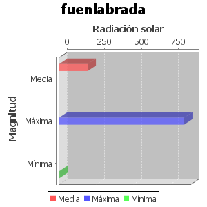

Estaciones asociadas:
Alcobendas, Alcorcón, Fuenlabrada, Torrejón de Ardoz
La fecha de inicio es: 01/09/2021 - 00:00:00
La fecha de fin es: 27/09/2021 - 00:00:00
La temperatura media es: [Optional[183.33], Optional[317.0], Optional[11.0]]
La temperatura máxima es: TMaxima
La temperatura mínima es: TMinima
La radiación solar media es: Optional[192.31]
La radiación solar máxima es: Optional[845.0]
La radiación solar mínima es: Optional[1.0]
La precipitación media es: PMedia
La precipitación máxima es: PMaxima
La precipitación mínima es: PMinima
La temperatura media es: $humedadMedia
La temperatura máxima es: $humedadMaxima
La temperatura mínima es: $humedadMinima
La temperatura media es: $velocidadMedia
La temperatura máxima es: $velocidadMaxima
La temperatura mínima es: $velocidadMinima
La fecha de inicio es: $fechaIniCont
La fecha de fin es: $fechaFinCont
La temperatura media es: $azufreMedia
La temperatura máxima es: $azufreMaxima
La temperatura mínima es: $azufreMinima
La temperatura media es: $monoxido_carbonMedia
La temperatura máxima es: $monoxido_carbonMaxima
La temperatura mínima es: $monoxido_carbonMinima
La temperatura media es: $monoxido_nitrogenoMedia
La temperatura máxima es: $monoxido_nitrogenoMaxima
La temperatura mínima es: $monoxido_nitrogenoMinima
La temperatura media es: $dioxido_nitrogenoMedia
La temperatura máxima es: $dioxido_nitrogenoMaxima
La temperatura mínima es: $dioxido_nitrogenoMinima
La temperatura media es: $pm2Media
La temperatura máxima es: $pm2Maxima
La temperatura mínima es: $pm2Minima
La temperatura media es: $pm10Media
La temperatura máxima es: $pm10Maxima
La temperatura mínima es: $pm10Minima
La temperatura media es: $oxidos_nitrogenoMedia
La temperatura máxima es: $oxidos_nitrogenoMaxima
La temperatura mínima es: $oxidos_nitrogenoMinima
La temperatura media es: $ozonoMedia
La temperatura máxima es: $ozonoMaxima
La temperatura mínima es: $ozonoMinima
La temperatura media es: $toulenoMedia
La temperatura máxima es: $toulenoMaxima
La temperatura mínima es: $toulenoMinima
La temperatura media es: $black_carbonMedia
La temperatura máxima es: $black_carbonMaxima
La temperatura mínima es: $black_carbonMinima
La temperatura media es: $bencenoMedia
La temperatura máxima es: $bencenoMaxima
La temperatura mínima es: $bencenoMinima
La temperatura media es: $hidrocarburos_totalesMedia
La temperatura máxima es: $hidrocarburos_totalesMaxima
La temperatura mínima es: $hidrocarburos_totalesMinima
La temperatura media es: $hidrocarburos_nMetaMedia
La temperatura máxima es: $hidrocarburos_nMetaMaxima
La temperatura mínima es: $hidrocarburos_nMetaMinima
La temperatura media es: $metaparaxilenoMedia
La temperatura máxima es: $metaparaxilenoMaxima
La temperatura mínima es: $metaparaxilenoMinima